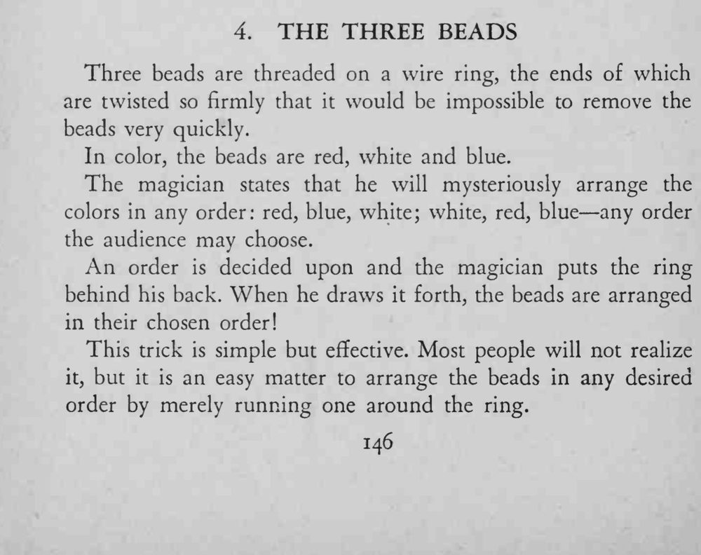
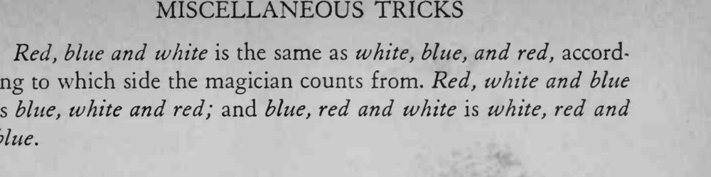

三颗珠子穿在一个拧死的铁丝环上，魔术师把环背到身后，再拿出来时，珠子已排成观众指定的顺序。
红白蓝与白蓝红从两端数是一样的，记住这组等价关系。


Three beads are threaded on a wire ring, the ends of which are twisted so firmly that it would be impossible to remove the beads very quickly. In color, the beads are red, white and blue. The magician states that he will mysteriously arrange the colors in any order: red, blue, white; white, red, blue any order the audience may choose. An order is decided upon and the magician puts the ring behind his back. When he draws it forth, the beads are arranged in their chosen order! This trick is simple but effective. Most people will not realize it, but it is an easy matter to arrange the beads in any desired order by merely running one around the ring. Red, blue and white is the same as white, blue, and red, according to which side the magician counts from. Red, white and blue is blue, white and red; and blue, red and white is white, red and blue.